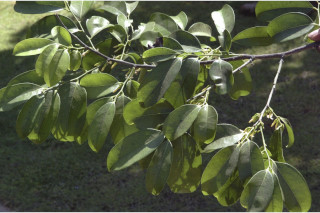
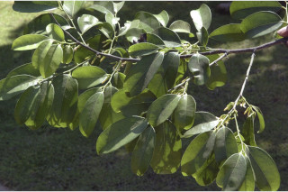
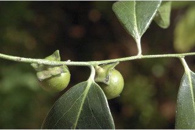
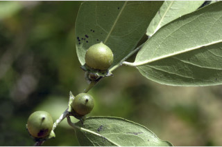
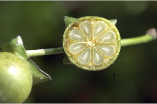
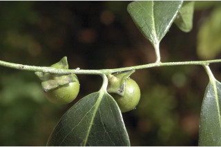
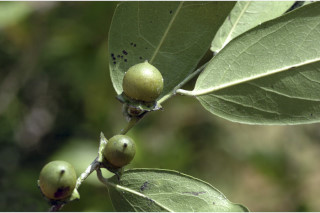
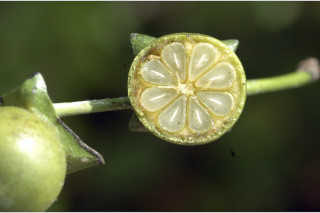

Trees up to 12 m tall.
12 ಮೀ. ಎತ್ತರದವರೆಗೆ ಬೆಳೆಯುವ ಮರಗಳು.
12 മീറ്റര് വരെ ഉയരത്തില് വളരുന്ന മരങ്ങള്.
மரம், 12 மீ. உயரம் வரை வளரக்கூடியது
Bark black, smooth.
ತೊಗಟೆ ಕಪ್ಪಾಗಿದ್ದು ನಯವಾಗಿರುತ್ತದೆ.
മിനുസമാര്ന്ന, കറുത്ത പുറംതൊലി
மரத்தின் பட்டை கருப்பு நிறமுடையது, வழுவழுப்பானது.
Branchlets terete, glabrous.
ಕಿರುಕೊಂಬೆಗಳು ದುಂಡಾಗಿದ್ದು,ರೋಮರಹಿತವಾಗಿರುತ್ತವೆ.
ഉപശാഖകള് ഉരുണ്ടതും, അരോമിലവുമാണ്.
சிறிய நுனிக்கிளைகள் குறுக்குவெட்டுத் தோற்றத்தில் வளையமானது, உரோமங்களற்றது.
Leaves simple, alternate, distichous; petiole 0.3-0.8 cm long, glabrous, subterete; lamina 5-13.5 x 1.5-4.5 cm, elliptic or oblong, apex acuminate with blunt tip or obtuse, base acute to rounded, margin entire, midrib flat; secondary_nerves 5-8 pairs, lower most pairs close and acute in angle; tertiary_nerves reticulate.
ಎಲೆಗಳು ಸರಳವಾಗಿದ್ದು ಪರ್ಯಾಯ ಹಾಗೂ ಸುತ್ತು ಜೋಡನಾ ವ್ಯವಸ್ಥೆ ಯಲ್ಲಿದ್ದು ಕಾಂಡದ ಎರಡೂ ಕಡೆಯ ಎದುರು ಬದರಿನ ಸಾಲಿನಲ್ಲಿರುತ್ತವೆ; ಎಲೆ ತೊಟ್ಟುಗಳು 0.3-0.8 ಸೆಂ.ಮೀ ಉದ್ದವಿದ್ದುಉಪ-ದುಂಡಾಕಾರವಾಗಿರುತ್ತವೆ ಹಾಗೂ ರೋಮ - ರಹಿತವಾಗಿರುತ್ತವೆ; ಪತ್ರಗಳು 5 – 13.5 X 1.5 - 4.5 ಸೆಂ.ಮೀ. ಗಾತ್ರ, ಅಂಡವೃತ್ತ ಅಥವಾ ಚತುರಸ್ರದ ಆಕಾರ, ಮೊಂಡಾದ ಅಗ್ರವುಳ್ಳ ಕ್ರಮೇಣ ಚೂಪಾಗುವ ತುದಿ ಅಥವಾಚೂಪಲ್ಲದ ತುದಿ, ಚೂಪಾದುದರಿಂದ ಹಿಡಿದು ದುಂಡಾದ,ನಯವಾದ ಅಂಚು ಬುಡ ಹೊಂದಿರುತ್ತವೆ; ಮಧ್ಯನಾಳ ಚಪ್ಪಟೆಯಾಗಿರುತ್ತದೆ;ಎರಡನೇ ದರ್ಜೆಯ ನಾಳಗಳು 5 – 8 ಜೋಡಿಗಳಿದ್ದು, ಅತಿ ತಳಗಿನ ಜೋಡಿಗಳು ಸನಿಹವಾಗಿದ್ದು ಚೂಪಾದ ಕೋನವನ್ನು ಹೊಂದಿರುತ್ತವೆ ; ಮೂರನೇ ದರ್ಜೆಯ ನಾಳಗಳು ಜಾಲಬಂಧ ನಾಳ ವಿನ್ಯಾಸದಲ್ಲಿ ರುತ್ತವೆ.
ലഘുവായ ഇലകള്, ഏകാന്തരമായി, തണ്ടിന്റെ ഇരുഭാഗത്ത് മാത്രമായടുക്കിയ വിധത്തിലാണ്; ഏതാണ് ഉരുണ്ടിരിക്കുന്നതും, അരോമിലവുമായ ഇലഞെട്ടിന് 0.3 സെ.മീ മുതല് 0.8 സെ.മീ വരെ നീളം; പത്രഫലകത്തിന് 5 സെ.മീ മുതല് 13.5 സെ.മീ വരെ നീളവും 1.5 സെ.മീ മുതല് 4.5 സെ.മീ വരെ വീതിയും, ദീര്ഘവൃത്തീയമോ ആയതാകാരമോ ആണ്; അറ്റം മുനപ്പില്ലാത്ത ദീര്ഘാഗ്രമോ ഉപകോണാകാരമോ ആണ്, പത്രാധാരം നിശിതം മുതല് വൃത്താകാരംവരെയാകാം, അരികുകള് അവിഭജിതമാണ്, മുഖ്യസിര പരന്നതാണ്; 5 മുതല് 8 വരെ ജോഡി ദ്വിതീയ ഞരമ്പുകള്. ഏറ്റവും താഴത്തെ ജോഡികള് അടുത്തും നിശിത കോണിലുമാണ്; ത്രിതീയ ഞരമ്പുകള് ജാലിതമാണ്.
இலைகள் தனித்தவை, மாற்றுஅடுக்கமானவை, இருநெடுக்கு வரிசையிலையடுக்கம் (டைஸ்டிக்கஸ்); இலைக்காம்பு 0.3-0.8 செ.மீ. நீளமானது, உரோமங்களற்றது, குறுக்குவெட்டுத் தோற்றத்தில் வளையம் போன்றது; இலை அலகு 5-13.5 X 1.5-4.5 செ.மீ., நீள்வட்டம் அல்லது நீள்சதுரம், அலகின் நுனி வால் போன்று நீண்டு மழுங்கிய முனை அல்லது பள்ளமானது, அலகின் தளம் கூரியது முதல் வட்டமானது, அலகின் விளிம்பு முழுமையானது, மையநரம்பு மேற்பரப்பில் அலகின் பரப்பிற்கு சமமானது; இரண்டாம் நிலை நரம்புகள் 5-8 ஜோடிகள், தளப்பகுதியில் உள்ள நரம்பு ஜோடிகள் நெருக்கமானவை; மூன்றாம் நிலை நரம்புகள் வலைப்பின்னல் அமைப்பு கொண்டது.
Flowers unisexual; male flowers subsessile, in 3-flowered, axillary cymes, cream; female flowers subsessile, axillary, solitary, pedicels 0.2 cm long.
ಹೂಗಳು ಏಕ ಲಿಂಗಿಗಳು; ಗಂಡು ಹೂಗಳುಕೆನೆ ಬಣ್ಣದಲ್ಲಿದ್ದು, ಉಪ-ತೊಟ್ಟು -ಸಹಿತವಾಗಿದ್ದು,3 ಹೂಗಳನ್ನೊಳಗೊಂಡ, ಅಕ್ಷಾಕಂಕುಳಿನಲ್ಲಿನ ಮಧ್ಯಾರಂಭಿ ಪುಷ್ಪಮಂಜರಿಯಲ್ಲಿರುತ್ತವೆ;ಹೆಣ್ಣು ಹೂಗಳು ಉಪ-ತೊಟ್ಟುಸಹಿತವಾಗಿದ್ದು ಅಕ್ಷಾಕಂಕುಳಿನಲ್ಲಿ ಒಂಟಿಯಾಗಿರುತ್ತವೆ.
പൂക്കള് ഏകലിംഗികളാണ്; ക്രീം നിറത്തിലുളള ഉപഅവൃന്ത ആണ്പൂക്കള്, 3 എണ്ണമുളള കക്ഷീയ സൈമുകളിലുണ്ടാകുന്നു; പൂഞെട്ടിന് 0.2 സെ.മീ നീളമുളള ഉപഅവൃന്ത പെണ്പൂക്കള്, ഒറ്റക്ക്, കക്ഷങ്ങളിലുണ്ടാകുന്നു.
ஓர்பால் மலர்கள்; ஆண்மலர்கள் சிறிய காம்புகளுடன் மூன்று மலர்களை கொண்ட இலைக்கோணங்களில் காணப்படும் சைம் மஞ்சரி, கிரீம்; பெண்மலர்கள் சிறிய காம்புடையது, இலைக்கோணங்களில் காணப்படும், தனித்தவை, பூக்காம்பு 0.2 செ.மீ. நீளமானது.
Berry, globose or subglobose, to 2 cm across, apiculate, with fruiting_calyx_lobes accrescent, reflexed; usually 4 seeded, rarely 2-8.
ಬೆರ್ರಿಗಳು ಅಂದಾಜು 2 ಸೆಂ. ಮೀ. ವ್ಯಾಸ ಹೊಂದಿದ್ದು ಗೋಳಾಕಾರ ಅಥವಾ ಉಪಗೋಳಾಕಾರದಲ್ಲಿದ್ದು ಅಗ್ರದಲ್ಲಿ ಸೂಕ್ಷ್ಮ ಮೊನಚು ಮುಳ್ಳನ್ನು ಹೊಂದಿರುತ್ತವೆ ಹಾಗೂ ವೃದ್ಧಿಸಿದ,ಹಿಂಚಾಚಿದ ಪುಷ್ಪಪಾತ್ರೆಯ ದಳಗಳ ಸಮೇತವಾಗಿರುತ್ತವೆ; ಸಾಧಾರಣವಾಗಿ 4 ಬೀಜಗಳಿರುತ್ತವೆ ಅಪರೂಪವಾಗಿ 2-8 ಬೀಜಗಳಿರುತ್ತವೆ.
കായ, പിന്നാക്കം വളഞ്ഞ് നില്ക്കുന്ന വീര്ത്ത വിദളങ്ങളോടുകൂടിയ 2 സെ.മീ വരെ കുറുകേയുളള, ഗോളാകാരമോ ഉപഗോളാകാരമോ ആയ ബെറിയാണ്; സാധാരണയായി 4 വീതം വിത്തുകള്, അപൂര്വ്വമായി 2 മുതല് 8 വരെ വിത്തുകള്.
முழுச்சதைகனி (பெர்ரி), உருண்டையானது அல்லது சிறிதளவு உருண்டையானது, 2 செ.மீ. வரை குறுக்களவு கொண்டது, ஏபிகுலேட், உதிராத வளரக்கூடிய வளைந்த புல்லி இதழ்களுடையது; பொதுவாக 4 விதைகளை கொண்டது, அரிதாக 2-8 விதைகள் காணப்படும்.


 



 




